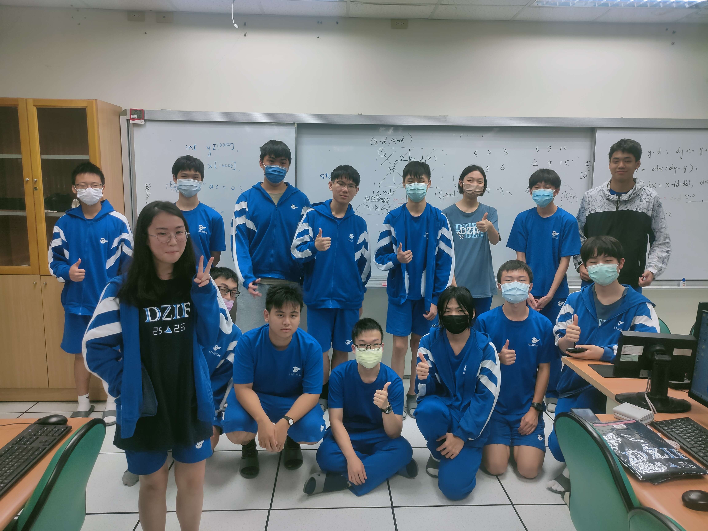
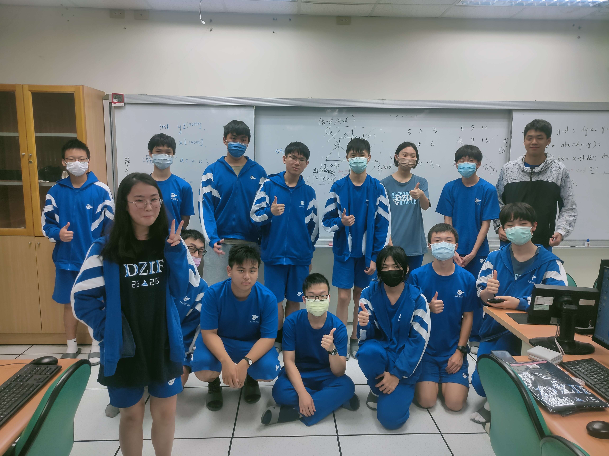

社課規劃
上學期
| 社課日期 | 活動內容 |
|---|---|
| 9/8 | 社團介紹&團康活動 |
| 9/17 | python介紹&輸入輸出&資料型態&跳脫字元 |
| 9/22 | 聯合迎新 |
| 9/29 | 優先順序度&常用語法&投票 |
| 10/6 | 自習 |
| 10/13 | 迴圈&常用函式 |
| 10/20 | 條件判斷 if |
| 10/27 | 串列 list |
| 11/10 | 隨機 random |
| 11/17 | 字典 dictionary |
| 11/24 | 自習 |
| 12/1 | py-bot介紹&前置作業-創新軟體 |
| 12/8 | 前置作業-權限&邀請bot |
| 12/15 | bot聊天室功能設置 |
| 12/22 | 關鍵字 |
| 12/29 | 識別文字 |
| 1/5 | 骰子 |
下學期
| 社課日期 | 活動內容 |
|---|---|
| 2/16 | HTML介紹&起手式&基本元素 |
| 2/23 | python屬性 |
| 3/1 | head&img圖片 |
| 3/8 | 項目列表清單 |
| 3/15 | 自習 |
| 3/22 | 段考社課停辦 |
| 3/29 | a超連結&video影片&form表單 |
| 4/12 | div&span容器 css起手式 |
| 4/19 | css基本概念與功能 |
| 4/26 | css文字&圖片 |
| 5/3 | css box model |
| 5/10 | 自習 |
| 5/17 | css 排版 |
| 5/24 | css 選擇器&框架 |
| 5/31 | VB詢問(資訊課專題) |
| 6/1 | VB詢問(資訊課專題) |
| 6/7 | VB詢問(資訊課專題) |
| 6/14 | 接幹 |
圖片
 



幹部心得
擔任資訊社社長是一個充滿挑戰與機會的角色，這段時間讓我深刻體會到作為一位社長所需面臨、學習的事情。 首先，作為資訊社的領導者，我學會了如何有效地組織和管理團隊，聆聽並尊重不同幹部們的意見，並在決策時考慮到大家不同的想法。 其次，我意識到溝通真的非常重要。我們之間有個習慣，大家會在週二午休時約出來討論下一堂社課的準備和未來可能發生的事情，透過定期舉辦會議、活動，我們促進了成員之間的感情和資訊技術的交流。 另外，我學會了在壓力下保持冷靜和應對挑戰。我們經常會面臨各種挑戰和困難，像是實際情況不如預期等等的問題，但關鍵在於如何應對這些挑戰。從失敗中學習，大家不斷調整和改進這些策略和計劃。 最後，擔任資訊社社長讓我意識到領導不僅僅是一個頭銜，更是一種責任和承諾，需要確保每個成員都能得到支持和機會，同時也為社團的未來做好規劃和準備。擔任資訊社社長是一段充實而寶貴的經驗，通過這個角色，我成長了自己。我相信這些經驗將為我未來的職業生涯奠定堅實的基礎。
因為每個人似乎都寫差不多的東西，我想說些不太一樣的。
第一點，我一開始並不是想留在資訊社的，只是我沒有朋友可以跟我加入漫研，或是跟我一起創生物研究社，但我與其他人有一項造成後續溝通困難巨大的差距，關於我從一開始就有當幹部的決定，所以我一直無法同理消極怠工的幹部，畢竟對我而言，既然當上這這個幹部就應該對於社團負責。
第二點，我認為我其實算是有愧於副社這個職位的，因為我花了更多時間在於活動與文書的職責上，像是簽公假單、社團活動記錄撰寫及舉辦各類聯合活動、活動內容編排，我認為我自己已經盡可能在社團活動紀錄上描寫詳細，是有完成文書的職責了，只是我曾問過學弟是否對於活動感興趣，卻意外發現很多活動其實對他們不算是「放鬆的休息」，而更偏向「必要的社交活動」，所以對於各類活動的定義及希望達到的效果必須更明確，像是之後的密室逃脫更應該是社員對於之後上幹的熟悉流程，而非純粹的休閒活動。
其三為感謝，因為我的高中生涯只能說是超乎我想像的豐富，各類競賽、科展比賽、班內成果發表甚至學習寫小說等都很耗時間，有時候社團紀錄會來不及寫，更多時候社團課會直接缺席，很感謝各位幹部會主動提出幫忙完成我工作範圍內的任務，因為我自己在做專題時也有發現這個問題，關於我自身很容易將所有事情攬在身上，不放心交予他人，後來我才學會了，只要「明確定義工作範圍」並雙方同意，大多數的時候對方還是會完成交付的任務。
作為第一個上去教學的教學本人我其實很不安 畢竟要跟一群沒怎麼見面的人相處、甚至還要教導他們一個全新的語言 算是勉強被推上去了 雖說這樣，但我還是有一群人在後面幫我，每個禮拜午休的開會，除了檢討跟改進(還有找到更多問題)外其實就沒什麼 而在改變的途中也有老師跟前輩(上屆教學)在領導我，不只指出我上課講話有點小聲 還有告訴我其實大部分學弟都沒有在聽課(包括去年上學期的我...)，而且有些人光是聽是不太會懂的 所以上課的同時可以穿插幾個題目在裡面讓他們真正練習到 在一邊改正我講話太小聲的習慣時我也一邊修正簡報 將最精簡同時篇幅很少的樣式改成講解其中的細節 同種題目的多種解法，每一個程式的細節以及其中的關聯性 仔細理解學弟卡住的點並幫他們解惑 希望這些經驗可以成為我未來工作的助力 又或是幫下一屆解開困境的忠告
當擔任資訊社團的教學者，我扮演了啟蒙者和引路人的角色，給予學生知識和技能的指引。在這個角色中，承擔著重要的責任，需要具備耐心、清晰的溝通能力和對技術的深刻理解。 首先，了解學生的程度和需求是至關重要的。有些學生可能是初學者，需要從基礎開始，而其他人可能已經有一定的知識，需要更深入的指導。因此，適應教學方式來滿足不同學生的需求是必要的。 其次，給予學生實踐的機會是非常重要的。通過實際的編程項目或者解決問題，學生可以更深入地理解所學的知識。提供一個實驗室環境或者專案作業，讓學生動手實踐，體驗到技能的應用和價值。 另外，鼓勵學生彼此交流和合作也是很有益的。在資訊領域，團隊合作和溝通能力同樣重要，因此在教學過程中培養這些能力也是很重要的一環。 最後，持續學習和更新自己的知識也是不可或缺的。資訊領域發展迅速，新技術不斷涌現，作為教學者，要保持與時俱進，不斷學習和掌握最新的知識，才能夠更好地指導學生。 總的來說，作為資訊社團的教學者，需要不斷地調整教學方式來滿足不同學生的需求，並且注重實踐和合作，同時不忘持續學習和提升自己的能力。這樣才能夠更好地完成自己的教學使命，幫助學生在資訊領域取得成功。
作為學校資訊社的副教學，我在這一年的社團活動中，經歷了許多挑戰和成長，這些經歷使我對團隊合作、領導力以及資訊有了更深的理解和認識。回顧過去的努力和成果，我深感欣慰，同時也充滿感恩之情，因為這段旅程並非我一人所能完成，而是依靠我們整個幹部團隊的齊心協力。在暑假期間，我和其他教學、副教學負責介紹VB小遊戲作為資訊社的招生活動。當時，我們希望能夠通過這個活動吸引更多對編程和資訊有興趣的同學加入我們的社團。為此，我們精心準備了設計了幾個簡單有趣的小遊戲，並希望在介紹過程中引發新生對於程式語言的濃厚興趣和好奇心，同時也引導新生們認識到編程是一項充滿挑戰但也非常有意義的工作。
上學期我負責C++上機考簡報的製作和講解。這項任務不僅使我複習高一學過的C++語言，還需要學習能夠清晰、簡潔地將知識傳達給同學們。我花了大量時間準備簡報內容，第一節課過程沒有和教學一開始說好我打的程式碼的含意，導致教學的成果不如預期。我臨時代替教學解釋程式碼的內容，但因為我非常緊張並且講解得不夠精細而且表達不流暢以至於對程式尚不太熟悉的同學來說理解比較困難，而且教學的題目和時間的安排並沒有按照理想的情況進行。第二節的教學上也做了一些修正。在教學長解說明題目以及應該做出來的結過後，他主要打程式，然後每打完一段有意義的內容後按執行，我就始開始解釋程式碼，好處是一次要講解的內容少，要解釋的內容就會清楚不會沒有按照順序的去教程式，也比較易緊張，而講好後同學也可以馬上思考這段程式碼的意涵。因此我第二節的效率有比第一節好，雖然表達能力還不算很好，但至少邏輯解釋相對清楚。雖然上機考複習活動並沒有很成功，但是從中我學到了不少寶貴的經驗，例如:事前要先準備各種可能才不容易緊張導致尷尬場面，再者是不要太理想化當時的狀況，要考量學弟妹理解上花時間比預想久、部分同學打字速度慢等。還有就是遇到非預期狀況還是要冷靜思考，不要慌張。
到了下學期，我們的課程重點轉向HTML、CSS網頁設計。而我負責CSS課程的前2/3，CSS這是一門結合創意與技術的課程，不僅要具備基本的編程能力，還要有一定的美學素養。我雖對CSS不是那麼熟悉，但是在教課時相對就比上學期教上機考狀況好上不少，經過上次的教學經驗，使我在講解上遇到困難時仍從容自若的思考過後後馬上解釋，而課程上特別強調實踐操作，鼓勵同學們在學習基礎知識的同時，多練習打出各種語法與函式通過實踐來加深理解。看到學弟們從最初的陌生，到逐漸掌握CSS的各種技巧，並能夠設計出美觀、實用的網頁，讓我感到很欣慰。
除了日常的教學和活動安排之外，我們資訊社的幹部們也經常利用每週二中午的時間開會，討論社內事務。這些會議對於我們社團的運營至關重要，讓我們能夠及時了解各項工作的進展，協調彼此的任務，並解決遇到的各種問題。透過這些定期會議，我學到了很多難能可貴的技能和經驗。首先是溝通和協調能力。在會議中，我們需要聽取各位幹部的意見和建議，並且達成共識。這要求我們具備良好的溝通技巧，能夠清晰地表達自己的觀點，同時也要善於傾聽，尊重他人的意見。其次是計劃和組織能力。我們經常討論教學進度的安排與社團活動(例如:與漫研社聯合玩TRPG)，這些活動和計劃需要細緻的安排和準備，我們必須制定詳細的時間，分配具體的任務，並確保每個環節都能順利進行。這使我們學會了如何有效地組織和管理一個團隊，確保所有成員都能夠協同合作，達成共同的目標。最後，這些會議還讓我學會了問題解決的能力。每當我們遇到困難或挑戰時，會議提供了一個集思廣益的平台，讓我們可以一起討論並找到解決方案，鍛鍊了我的思維能力與應變能力，讓我能夠在面對突發情況時更加從容不迫。總的來說，這些定期的會議讓我在多方面得到了成長和提升，不僅提高了我處理事情的能力，還加深了我對團隊合作和集體智慧的認識，這些經驗對我未來的學習和工作都將大有裨益。
我們資訊社只有六位幹部，每個人的責任都很重大。我們團結一致，分工協作，克服了許多困難，將社團活動運營得有聲有色。在這個過程中，我學會了如何與他人合作，如何有效地溝通和協調。我們幹部之間相互支持，無論是課程設計、活動組織還是資源管理，我們都努力做到最好。正是這種團隊精神，使我們能夠在人員有限的情況下，依然將資訊社經營得井井有條。這段時間的經歷對我來說，不僅僅是一次實踐機會，更是一段寶貴的人生經驗。它教會了我許多課堂上學不到的東西，例如如何在壓力下保持冷靜，如何面對挫折並從中學習，如何激勵和引導他人等等。這些經驗將對我未來的學習和工作產生深遠的影響。總而言之，作為學校資訊社的副教學，這一年的經歷雖充滿了挑戰和收穫，但我深感榮幸能夠與一群有著相同興趣的同伴們一起經營資訊社，通過我們協心戮力，為社團和下一屆的學弟們帶來了實質性的幫助和成長。
身為資訊社的副教學，我在暑假負責了 VB 遊戲的開發工作，這是為了社團招生而進行的。這段時間，我深刻領悟到了團隊合作和技術實踐的重要性。在 VB 遊戲開發的過程中，我們不僅學會了程式設計的基礎知識，還體驗到了如何將理論應用於實踐中的挑戰。每位成員都貢獻了自己的想法和技能，最終我們都成功地創建了一款令人驚艷的遊戲原型，這對於社團的招生宣傳起到了極大的幫助。
而在高二下學期，我將轉向教授 CSS 的後半部分內容。CSS 是網頁設計中至關重要的一部分，它能夠為網站帶來美觀與視覺上的吸引力。我期待著能夠與學生們分享我對於 CSS 的經驗與見解，幫助他們更好地掌握這一技術，將其應用於未來的網頁設計中。
最後，在卸任時，我將全力以赴製作資訊社的社團評鑑網頁。這不僅是一個展示我們社團活動成果的平台，也是一個讓更多人了解我們的社團文化和價值觀的窗口。我將努力設計一個視覺吸引力強、功能完善的網頁，希望能夠給社團成員和外界帶來美好的瀏覽體驗。
綜上所述，這段時間的工作經歷讓我獲益良多，不僅在技術上有所提升，更加深了我對於團隊合作和專業實踐的理解。我期待著未來能夠在教學與項目管理中繼續發揮所長，為社團的發展貢獻自己的力量。